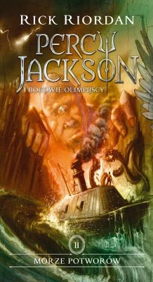

"Morze Potworów"
Kiedy drzewo Thalii zostaje w tajemniczy sposób zatrute, magiczne granice Obozu Herosów zaczynają zawodzić. Teraz Percy i jego przyjaciele mają zaledwie kilka dni na znalezienie jedynego magicznego przedmiotu, który może uratować obóz, zanim zostanie on opanowany przez potwory. Haczyk: aby go znaleźć, muszą wpłynąć do Morza Potworów. Po drodze Percy musi przeprowadzić brawurową akcję ratunkową, by ocalić swojego starego przyjaciela Grovera, i poznaje straszną tajemnicę o swojej rodzinie, co sprawia, że zastanawia się, czy bycie synem Posejdona to zaszczyt czy przekleństwo.
